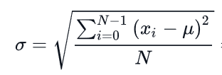
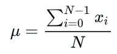

Day 1 - Quartiles, Interquartile Range and standard deviation
Quartile
Definition
A quartile is a type of quantile. The first quartile (Q1) is defined as the middle number between the smallest number and the median of the data set. The second quartile (Q2) is the median of the data. The third quartile (Q3) is the middle value between the median and the highest value of the data set.
Implementation in python without using the scientific libraries
def median(l):
l = sorted(l)
if len(l) % 2 == 0:
return (l[len(l) // 2] + l[(len(l)//2 - 1)]) / 2
else:
return l[len(l)//2]
def quartiles(l):
# check the input is not empty
if not l:
raise StatsError('no data points passed')
# 1. order the data set
l = sorted(l)
# 2. divide the data set in two halves
mid = int(len(l) / 2)
Q2 = median(l)
if (len(l) % 2 == 0):
# even
Q1 = median(l[:mid])
Q3 = median(l[mid:])
else:
# odd
Q1 = median(l[:mid]) # same as even
Q3 = median(l[mid+1:])
return (Q1, Q2, Q3)
L = [3,7,8,5,12,14,21,13,18]
Q1, Q2, Q3 = quartiles(L)
print(f"Sample : {L}\nQ1 : {Q1}, Q2 : {Q2}, Q3 : {Q3}")
Sample : [3, 7, 8, 5, 12, 14, 21, 13, 18]
Q1 : 6.0, Q2 : 12, Q3 : 16.0
Interquartile Range
Definition
The interquartile range of an array is the difference between its first (Q1) and third (Q3) quartiles. Hence the interquartile range is Q3-Q1
Implementation in python without using the scientific libraries
print(f"Interquatile range : {Q3-Q1}")
Interquatile range : 10.0
Standard deviation
Definition
The standard deviation (σ) is a measure that is used to quantify the amount of variation or dispersion of a set of data values. A low standard deviation indicates that the data points tend to be close to the mean (also called the expected value) of the set, while a high standard deviation indicates that the data points are spread out over a wider range of values.
The standard deviation can be computed with the formula:

where µ is the mean :

Implementation in python without using the scientific libraries
import math
X = [10,40,30,50,20]
mean = sum(X)/len(X)
X = [(x - mean)**2 for x in X]
std = math.sqrt(
sum(X)/len(X)
)
print(f"The distribution {X} has a standard deviation of {std}")
The distribution [400.0, 100.0, 0.0, 400.0, 100.0] has a standard deviation of 14.142135623730951